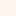

<!doctype html>
<html lang="en">
    <head>
        <meta charset="utf-8">
        <meta http-equiv="X-UA-Compatible" content="IE=edge">
        <meta name="viewport" content="initial-scale=1,user-scalable=no,maximum-scale=1,width=device-width">
        <meta name="mobile-web-app-capable" content="yes">
        <meta name="apple-mobile-web-app-capable" content="yes">
        <link rel="stylesheet" href="css/leaflet.css">
        <link rel="stylesheet" href="css/qgis2web.css"><link rel="stylesheet" href="css/fontawesome-all.min.css">
        <style>
        html, body, #map {
            width: 100%;
            height: 100%;
            padding: 0;
            margin: 0;
        }
        </style>
        <title></title>
    </head>
    <body>
        <div id="map">
        </div>
        <script src="js/qgis2web_expressions.js"></script>
        <script src="js/leaflet.js"></script>
        <script src="js/leaflet.rotatedMarker.js"></script>
        <script src="js/leaflet.pattern.js"></script>
        <script src="js/leaflet-hash.js"></script>
        <script src="js/Autolinker.min.js"></script>
        <script src="js/rbush.min.js"></script>
        <script src="js/labelgun.min.js"></script>
        <script src="js/labels.js"></script>
        <script src="data/Mufindidensitymapp_1.js"></script>
        <script>
        var highlightLayer;
        function highlightFeature(e) {
            highlightLayer = e.target;

            if (e.target.feature.geometry.type === 'LineString') {
              highlightLayer.setStyle({
                color: '#ffff00',
              });
            } else {
              highlightLayer.setStyle({
                fillColor: '#ffff00',
                fillOpacity: 1
              });
            }
        }
        var map = L.map('map', {
            zoomControl:true, maxZoom:28, minZoom:5
        })
        var hash = new L.Hash(map);
        map.attributionControl.setPrefix('<a href="https://github.com/tomchadwin/qgis2web" target="_blank">qgis2web</a> &middot; <a href="https://leafletjs.com" title="A JS library for interactive maps">Leaflet</a> &middot; <a href="https://qgis.org">QGIS</a>');
        var autolinker = new Autolinker({truncate: {length: 30, location: 'smart'}});
        var bounds_group = new L.featureGroup([]);
        function setBounds() {
            if (bounds_group.getLayers().length) {
                map.fitBounds(bounds_group.getBounds());
            }
        }
        map.createPane('pane_OSMStandard_0');
        map.getPane('pane_OSMStandard_0').style.zIndex = 400;
        var layer_OSMStandard_0 = L.tileLayer('http://tile.openstreetmap.org/{z}/{x}/{y}.png', {
            pane: 'pane_OSMStandard_0',
            opacity: 1.0,
            attribution: '<a href="https://www.openstreetmap.org/copyright">© OpenStreetMap contributors, CC-BY-SA</a>',
            minZoom: 5,
            maxZoom: 28,
            minNativeZoom: 0,
            maxNativeZoom: 19
        });
        layer_OSMStandard_0;
        map.addLayer(layer_OSMStandard_0);
        function pop_Mufindidensitymapp_1(feature, layer) {
            layer.on({
                mouseout: function(e) {
                    for (i in e.target._eventParents) {
                        e.target._eventParents[i].resetStyle(e.target);
                    }
                },
                mouseover: highlightFeature,
            });
            var popupContent = '<table>\
                    <tr>\
                        <td colspan="2">' + (feature.properties['fid'] !== null ? autolinker.link(feature.properties['fid'].toLocaleString()) : '') + '</td>\
                    </tr>\
                    <tr>\
                        <td colspan="2">' + (feature.properties['id'] !== null ? autolinker.link(feature.properties['id'].toLocaleString()) : '') + '</td>\
                    </tr>\
                    <tr>\
                        <td colspan="2">' + (feature.properties['left'] !== null ? autolinker.link(feature.properties['left'].toLocaleString()) : '') + '</td>\
                    </tr>\
                    <tr>\
                        <td colspan="2">' + (feature.properties['top'] !== null ? autolinker.link(feature.properties['top'].toLocaleString()) : '') + '</td>\
                    </tr>\
                    <tr>\
                        <td colspan="2">' + (feature.properties['right'] !== null ? autolinker.link(feature.properties['right'].toLocaleString()) : '') + '</td>\
                    </tr>\
                    <tr>\
                        <td colspan="2">' + (feature.properties['bottom'] !== null ? autolinker.link(feature.properties['bottom'].toLocaleString()) : '') + '</td>\
                    </tr>\
                    <tr>\
                        <th scope="row">NUMPOINTS</th>\
                        <td>' + (feature.properties['NUMPOINTS'] !== null ? autolinker.link(feature.properties['NUMPOINTS'].toLocaleString()) : '') + '</td>\
                    </tr>\
                    <tr>\
                        <th scope="row">AREA</th>\
                        <td>' + (feature.properties['AREA'] !== null ? autolinker.link(feature.properties['AREA'].toLocaleString()) : '') + '</td>\
                    </tr>\
                </table>';
            layer.bindPopup(popupContent, {maxHeight: 400});
        }

        function style_Mufindidensitymapp_1_0(feature) {
            if (feature.properties['NUMPOINTS'] >= 1.000000 && feature.properties['NUMPOINTS'] <= 1.000000 ) {
                return {
                pane: 'pane_Mufindidensitymapp_1',
                stroke: false, 
                fill: true,
                fillOpacity: 1,
                fillColor: 'rgba(255,245,240,0.629)',
                interactive: true,
            }
            }
            if (feature.properties['NUMPOINTS'] >= 1.000000 && feature.properties['NUMPOINTS'] <= 4.000000 ) {
                return {
                pane: 'pane_Mufindidensitymapp_1',
                stroke: false, 
                fill: true,
                fillOpacity: 1,
                fillColor: 'rgba(251,112,80,0.629)',
                interactive: true,
            }
            }
            if (feature.properties['NUMPOINTS'] >= 4.000000 && feature.properties['NUMPOINTS'] <= 20.000000 ) {
                return {
                pane: 'pane_Mufindidensitymapp_1',
                stroke: false, 
                fill: true,
                fillOpacity: 1,
                fillColor: 'rgba(103,0,13,0.629)',
                interactive: true,
            }
            }
        }
        map.createPane('pane_Mufindidensitymapp_1');
        map.getPane('pane_Mufindidensitymapp_1').style.zIndex = 401;
        map.getPane('pane_Mufindidensitymapp_1').style['mix-blend-mode'] = 'normal';
        var layer_Mufindidensitymapp_1 = new L.geoJson(json_Mufindidensitymapp_1, {
            attribution: '',
            interactive: true,
            dataVar: 'json_Mufindidensitymapp_1',
            layerName: 'layer_Mufindidensitymapp_1',
            pane: 'pane_Mufindidensitymapp_1',
            onEachFeature: pop_Mufindidensitymapp_1,
            style: style_Mufindidensitymapp_1_0,
        });
        bounds_group.addLayer(layer_Mufindidensitymapp_1);
        map.addLayer(layer_Mufindidensitymapp_1);
        var baseMaps = {};
        L.control.layers(baseMaps,{'Mufindi density mapp<br /><table><tr><td style="text-align: center;"></td><td>1 - 1</td></tr><tr><td style="text-align: center;"></td><td>1 - 4</td></tr><tr><td style="text-align: center;"></td><td>4 - 20</td></tr></table>': layer_Mufindidensitymapp_1,"OSM Standard": layer_OSMStandard_0,}).addTo(map);
        setBounds();
        </script>
    </body>
</html>
